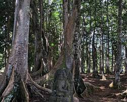
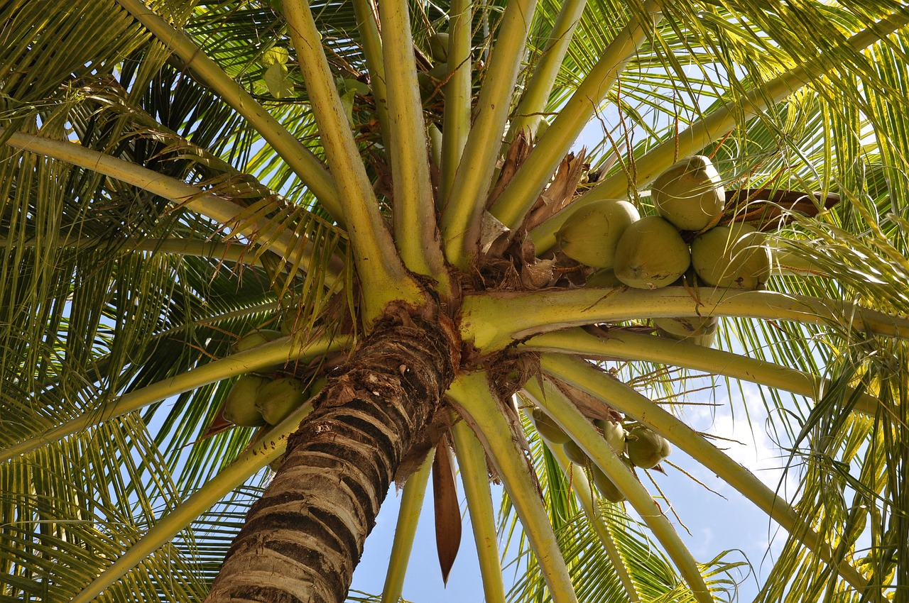

Biodiversidad

Drago de Socotra
El "Drago de Sangre" es una especie de árbol que se encuentra en la isla de Socotra, Yemen. Su forma única y su savia roja lo convierten en un símbolo distintivo de la flora de la región.

Bosques de Dracaenas en Hawái
Bosques de Dracaenas en Hawái
Las dracaenas, conocidas localmente como "ālā," son árboles nativos de Hawái. Su madera se utiliza tradicionalmente en la construcción de canoas y herramientas.

Bosques de Laurisilva en Madeira
La isla de Madeira alberga bosques de laurisilva, una formación boscosa subtropical que se caracteriza por árboles lauráceos y helechos.

Palma de Coco en las Maldivas